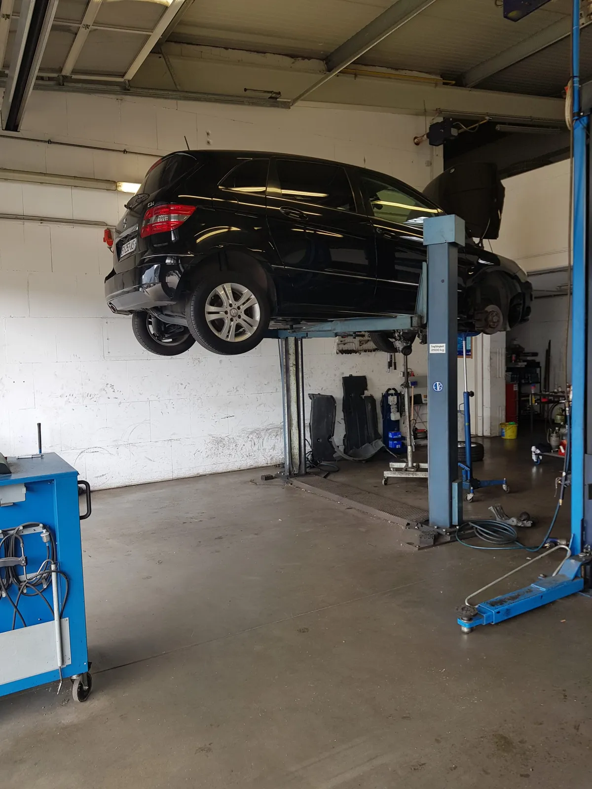
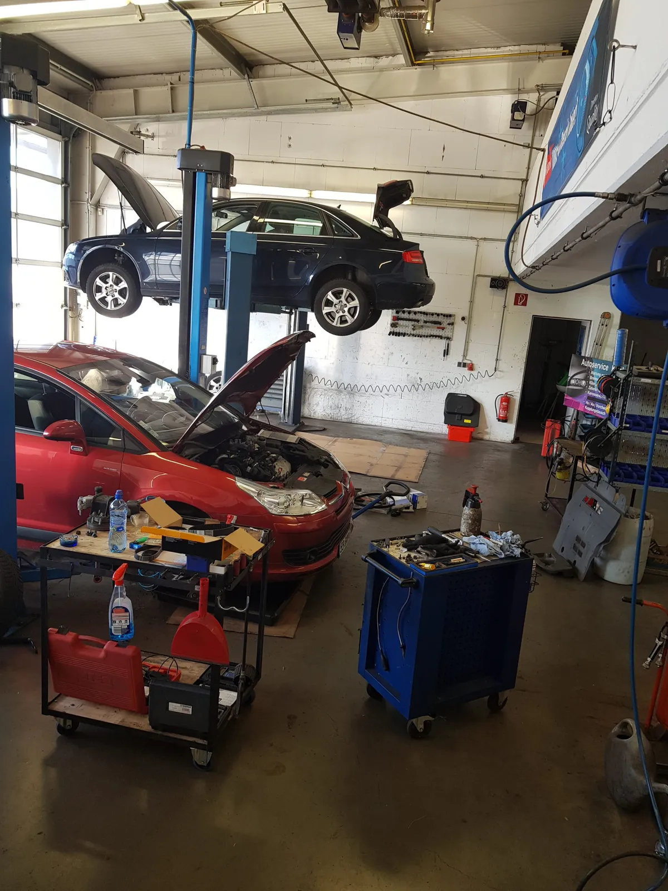
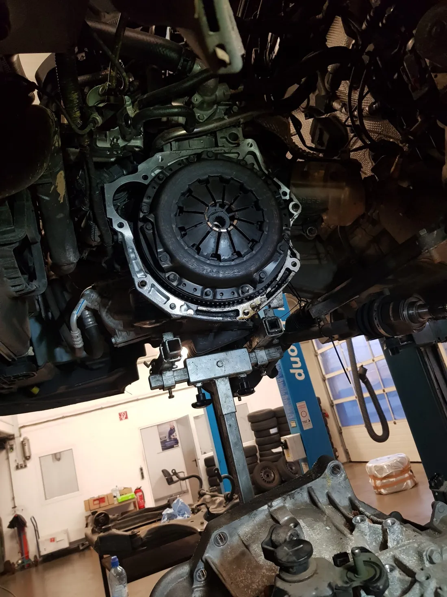
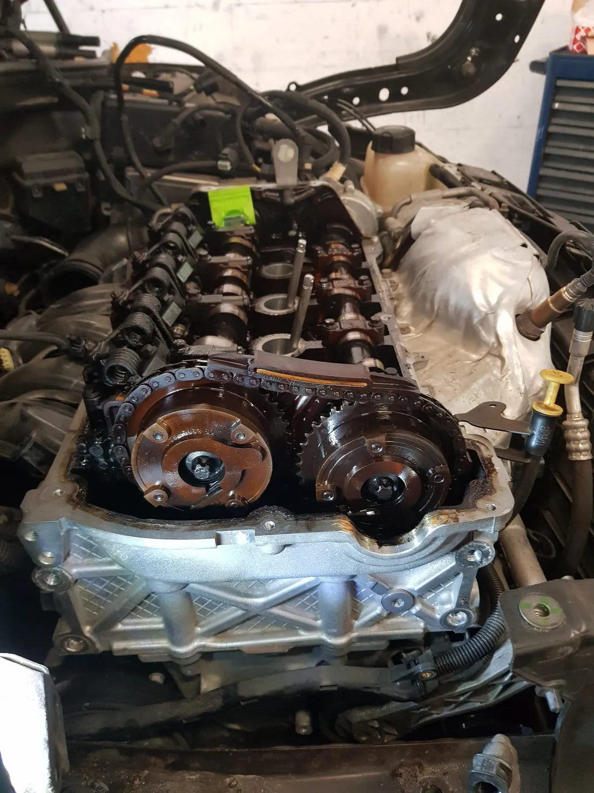
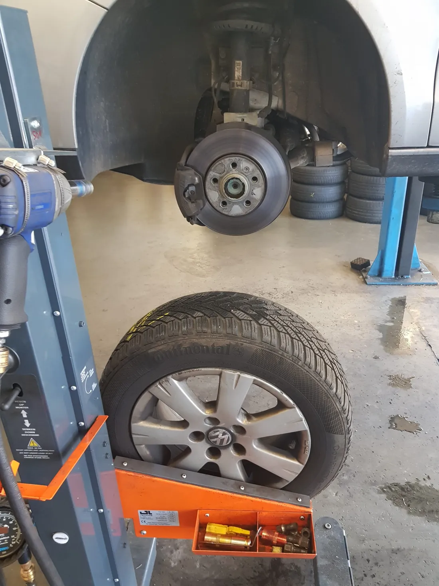
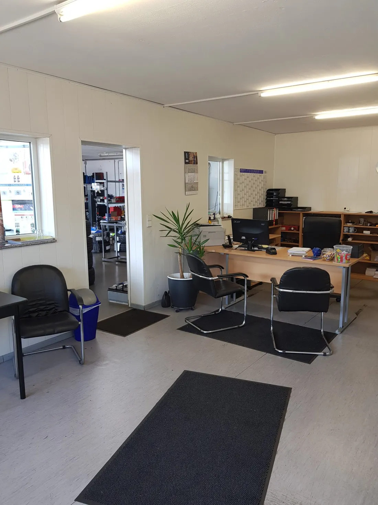
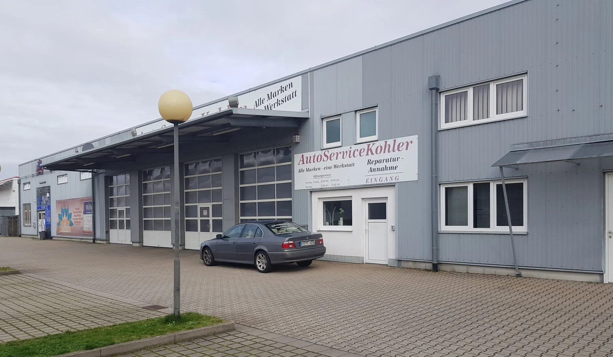

Autoservice Kohler
Reparaturen aller Marken in Rastatt.
Wartung nach Herstellervorgaben, Bremsen, Klima, Zahnriemen, Kupplung und HU/AU-Vorcheck. Preise vorher abgestimmt, Arbeit sauber erledigt.
4,8 von 5 Sternen bei 35 Google-Bewertungen

Was wir reparieren.
Alle Marken, ein Ansprechpartner. Was gemacht wird, besprechen wir vorher mit Ihnen.
Wartung
Inspektion nach Herstellervorgaben, für alle Marken.
Bremsen und Fahrwerk
Scheiben, Beläge und Fahrwerkservice.
Klimaanlage
Wartung und Reparatur der Klimaanlage.
Zahnriemen, Steuerkette
Wechsel von Zahnriemen und Steuerketten.
Kupplung
Getriebe raus, neue Kupplung rein.
Karosserie
Karosseriearbeiten an Ihrem Fahrzeug.
HU/AU-Vorcheck
Wir prüfen vorab, damit es bei der Hauptuntersuchung keine Überraschung gibt.
Aus unserer Halle.
Echte Arbeit, fotografiert in der Werkstatt Unter Wiesen 4.





Erst reden, dann schrauben.
Bevor wir anfangen, sprechen wir mit Ihnen über Befund und Kosten. Gemacht wird, was abgestimmt ist.
„Preise sind fair und es wird alles im Vorfeld abgestimmt.“
Aus einer Google-Bewertung. Insgesamt 4,8 von 5 Sternen bei 35 Bewertungen.

Unter Wiesen 4, Rastatt.
Einfach reinfahren. Route planen
Kontakt
07222 989798Montag bis Freitag 8:00 bis 18:00 Uhr
Werkstatt
Autoservice Kohler
Unter Wiesen 4
76437 Rastatt
Geöffnet
Montag bis Freitag
8:00 bis 18:00 Uhr
Inhaber
Cevdet Dagci